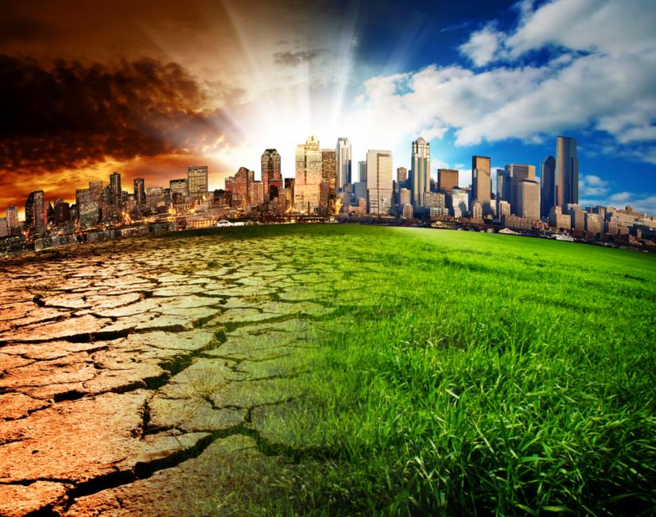
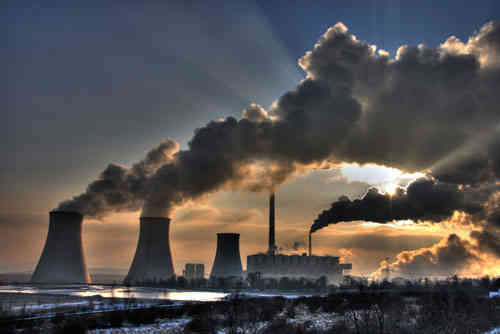
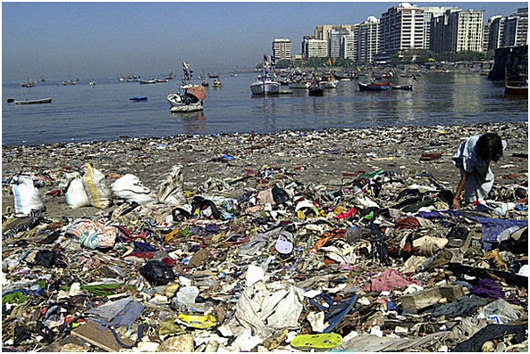

Clic para mas informacion

CONTAMINACIÓN DEL SUELO
El suelo es un constituyente normal de la Naturaleza, con componentes minerales y orgánicos y con componentes biológicos constituidos por organismos que viven en él.
La contaminación del suelo: es la incorporación al suelo de materias extrañas, como basura, desechos tóxicos, productos químicos, y desechos industriales, este tipo de contaminación produce un desequilibrio físico, químico y biológico que afecta negativamente las plantas, animales y humanos.
El uso de abonos, la sedimentación de contaminantes atmosféricos de origen industrial, los vertidos industriales y los depósitos y escombreras producen alteraciones en los suelos difícilmente cuantificables, sobre las que es problemática la previsión de efectos.

CONTAMINACION DEL AIRE
El aire limpio está compuesto principalmente por nitrógeno y oxígeno, en pequeñas proporciones se puede encontrar vapor de agua y dióxido de carbono. La contaminación del aire, proviene de la adición de sustancias emitidas a la atmósfera que causan un desequilibrio en la composición original. El aire contaminado contiene gases, polvos, olores y humos en grandes cantidades que dañan la salud de las personas, animales y plantas. Existen dos tipos de contaminantes:
Los que son arrojados directamente a la atmósfera como resultado de un proceso de combustión se llaman contaminantes primarios, estos son: dióxido de azufre, monóxido de carbono, vapores de combustibles y partículas suspendidas.
Una vez en el aire, algunos contaminantes primarios reaccionan con otros compuestos y forman contaminantes de igual o mayor toxicidad, estos se denominan contaminantes secundarios.
La contaminación daña de diferente manera la salud de los individuos dependiendo de su nivel de exposición a los contaminantes, de su capacidad y de su resistencia física.
- Una de rechazo a través de tos o estornudos.
- A través de la presencia de diversos síntomas o de enfermedades específicas.

CONTAMINACIÓN DEL AGUA.
La contaminación del agua se produce a través de la introducción directa o indirecta en los acuíferos o cauces de agua de diversas sustancias que pueden ser consideradas como contaminantes.
Se pueden definir tres tipos de contaminación del agua:En el ambiente laboral e industrial el agua contaminada puede producir daños de salud a los trabajadores, las vías de penetración del agua contaminada en el ser humano son:
CONSECUENCIAS DE LA CONTAMINACIÓN DEL AGUA
Como sabemos, la contaminación del agua no sólo afecta a los propios humanos en sí, sino a la fauna y a los diferentes seres vivos que pueden vivir en la misma. Eso sin contar que el agua contaminada puede ser portadora de una gran variedad de enfermedades, algunas de ellas mortales.
